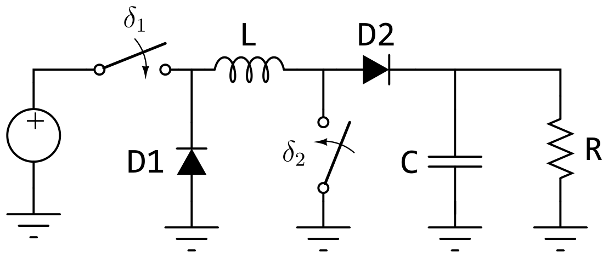
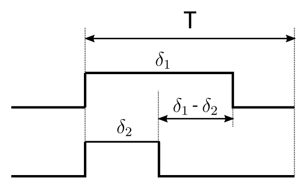
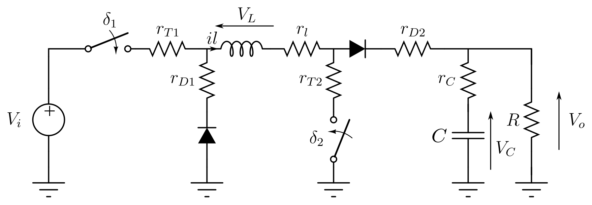
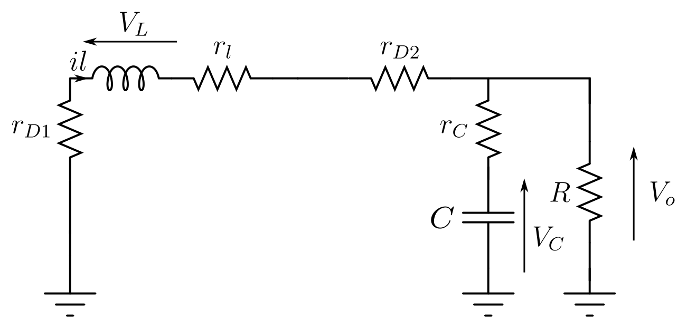
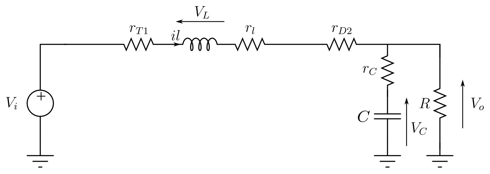
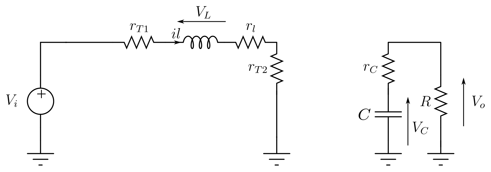
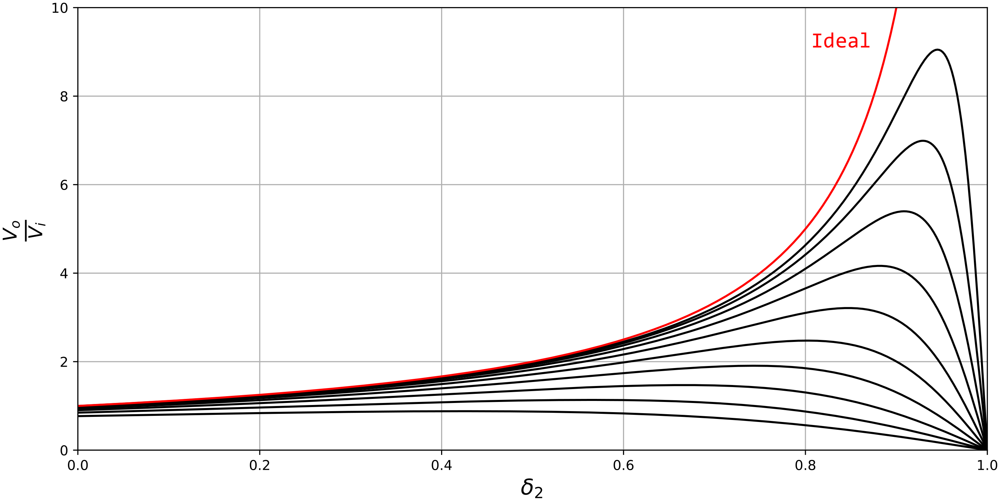
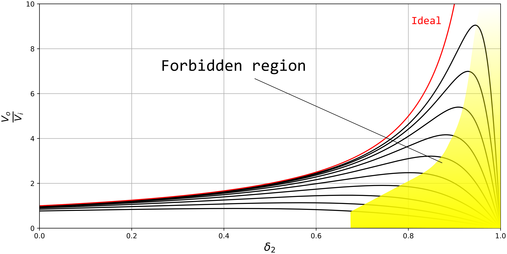

Introduction
This paper presents an analysis of a Buck-Boost converter with unidirectional power flow, featuring two active and two passive switches. Both the ideal scenario and a quasi-static loss analysis are investigated, demonstrating that under certain load and loss conditions, the transfer function can exhibit a negative slope. This phenomenon can be critical, potentially leading to a blocking operating point and component destruction. In this context, a quasi-static loss analysis implies that diode reverse recovery losses (i.e., reverse recovery charge) and MOSFET gate charge injection losses are neglected. In systems utilizing fast-recovery diodes, these losses are highly negligible, which also applies to the transistors under specific load and gate-drive conditions.
Non inverting Buck-Boost
The non-inverting buck-boost topology with two active switches is shown below:

In this topology, the two switching elements of the Buck and Boost topologies have been combined, preserving the energy-storage elements L and C, respectively. The switch parameters \(\delta_1\) and \(\delta_2\) are dimensionless quantities ranging from 0 to 1, representing the fraction of the total period during which the respective switches are closed. Therefore, this system presents two degrees of freedom; in principle, there is no restriction preventing them from being turned on and off at will within the total switching period.
Consequently, there are 4 possible \((S1,S2)\) states: Out of the 4 possible states, state \(E_2\) is prohibited because it is a useless state: assuming ideal components, it neither stores energy nor releases it to the load. When considering lossy elements, this state merely introduces dissipation losses across the various components without contributing to any significant energy transfer.
|
This imposes the following constraint: \(\delta_2 \leq \delta_1\)

State space analysis
Static analysis:
Let us define the load voltage as the variable \(x_1\) and the current as \(x_2\). The state-space analysis is formulated as follows:
\[\begin{equation} \begin{pmatrix} \dot{x}_1\\ \dot{x}_2 \end{pmatrix} = E_0(1-\delta_1)+E_1(\delta_1-\delta_2)+E_3\delta_2 \end{equation}\]
State \(E_0\) \[\begin{equation} \begin{pmatrix} \dot{x}_1\\ \dot{x}_2 \end{pmatrix} = \begin{pmatrix} -\frac{1}{RC} & \frac{1}{C}\\ -\frac{1}{L} & 0\\ \end{pmatrix} \begin{pmatrix} x_1\\ x_2 \end{pmatrix} \end{equation}\]
State \(E_1\) \[\begin{equation} \begin{pmatrix} \dot{x}_1\\ \dot{x}_2 \end{pmatrix} = \begin{pmatrix} -\frac{1}{RC} & \frac{1}{C}\\ -\frac{1}{L} & 0\\ \end{pmatrix} \begin{pmatrix} x_1\\ x_2 \end{pmatrix}+ \begin{pmatrix} 0\\ \frac{V_i}{L} \end{pmatrix} \end{equation}\]
State \(E_3\) \[\begin{equation} \begin{pmatrix} \dot{x}_1\\ \dot{x}_2 \end{pmatrix} = \begin{pmatrix} -\frac{1}{RC} & 0\\ 0 & 0\\ \end{pmatrix} \begin{pmatrix} x_1\\ x_2 \end{pmatrix}+ \begin{pmatrix} 0\\ \frac{V_i}{L} \end{pmatrix} \end{equation}\]
Yielding the averaged model1:
\[\begin{equation} \begin{pmatrix} \dot{x}_1\\ \dot{x}_2 \end{pmatrix} = \begin{pmatrix} -\frac{1}{RC} & \frac{1-\delta_2}{C}\\ -\frac{1-\delta_2}{L} & 0\\ \end{pmatrix} \begin{pmatrix} x_1\\ x_2 \end{pmatrix}+ \begin{pmatrix} 0\\ \frac{V_i \delta_1}{L} \end{pmatrix} \end{equation}\]
Considering the equilibrium points of the dynamic system, \(\dot{x}_1 = 0\) and \(\dot{x}_2 = 0\):
\[\begin{equation} \boxed{x_1 = V_i\frac{\delta_1}{1-\delta_2}} \end{equation}\]
\[\begin{equation} \boxed{x_2 = V_i\frac{\delta_1}{R\cdot(1-\delta_2)^2}} \end{equation}\]
Dynamic Analysis:
Revisiting the dynamic equations of the boost stage, the DC term \(\frac{V_i}{L}\) is now replaced by \(\frac{V_i\delta_1}{L}\) and decomposed into two components according to small-signal perturbation theory: \(\frac{V_i(\delta_1+\hat{\delta}_1)}{L}\). Analyzing this in the Laplace domain yields:
\[\begin{equation} \left\{ \begin{matrix} s\hat{X}_1(s) =& -\frac{X_1(s)}{RC}+ \left(\frac{1-\delta_2}{C}\right)\hat{X}_2(s) - \frac{X_2(s)}{R} \hat{\delta}_2(s)\\ s\hat{X}_2(s) =& -\frac{1-\delta_2}{L}\hat{X}_1(s) + \frac{X_1}{L}\hat{\delta}_2(s)+ \frac{V_i}{L}\hat{\delta}_1(s) \end{matrix}\right. \end{equation}\]
Solving for the voltage, we have:
\[\begin{equation} \hat{X}_1(s) = \frac{\frac{1}{LC}}{s^2+ \left(\frac{1}{RC}\right)s + \frac{(1-\delta_2)^2}{LC}} \cdot \left[ (1-\delta_2)V_i\hat{\delta}_1(s)+ \left((1-\delta_2)X_1-X_2Ls \right)\hat{\delta}_2(s) \right] \end{equation}\]
Substituting the equilibrium points for \(X_1\) and \(X_2\) finally yields:
\[\begin{equation} \boxed{ \hat{X}_1(s) = \frac{\frac{1}{LC}V_i}{s^2+ \left(\frac{1}{RC}\right)s + \frac{(1-\delta_2)^2}{LC}} \cdot \begin{pmatrix} (1-\delta_2)\\ \delta_1 \left(1-\frac{Ls}{R(1-\delta_2)^2}\right) \end{pmatrix}^T \cdot \begin{pmatrix} \hat{\delta}_1(s)\\ \hat{\delta}_2(s) \end{pmatrix} } \end{equation}\]
Loss Analysis
Analysis considering losses is essential as it enables the quantification of conduction power losses, the generated heat, and consequently, the temperature rise, as well as the operating limits for \(\delta_1\) and \(\delta_2\). Furthermore, it provides insights into the switching requirements.
The following lossy model serves as the starting point, where each loss resistance is associated with a specific active or passive component. It should be noted that within this model, the diodes could be replaced by MOSFETs under synchronous switching, and the required operational limits would remain valid.

Once again, the state variables are defined as \(x_1=V_C\) and \(x_2=i_l\). Furthermore, since the output voltage is of interest, it must be related to the state variable \(x_1\), given that \(V_C \neq V_R\) in the lossy case. The resulting state-space model is given by:
\[\begin{equation} \begin{matrix} \dot{x} = & Ax+Bu\\ y = & Cx\\ \end{matrix} \end{equation}\]
Next, each of the states is analyzed, and the C matrix is also determined.
State \(E_0\)
With both \(\delta_1\) and \(\delta_2\) open, the system yields:

\[\begin{equation} \begin{pmatrix} \dot{x}_1 \\ \dot{x}_2 \end{pmatrix} = \begin{pmatrix} -\frac{1}{C(R+r_C)} & \frac{R}{C(R+r_C)}\\ -\frac{R}{L(R+r_C)} & -\frac{r_{D1}+r_{D2}+r_l+r_C||R}{L}\\ \end{pmatrix} \end{equation}\]
Furthermore, matrix C is obtained by superposition as a linear combination of \(i_L\) and \(V_C\), accounting for its Thévenin impedance \(r_C\):
\[\begin{equation} C = \begin{pmatrix} \frac{R}{R+r_C} & \frac{r_CR}{R+r_C} \end{pmatrix} \end{equation}\]
State \(E_1\)
With \(\delta_1\) closed and \(\delta_2\) open, we have:

\[\begin{equation} \begin{pmatrix} \dot{x}_1 \\ \dot{x}_2 \end{pmatrix} = \begin{pmatrix} -\frac{1}{C(R+r_C)} & \frac{R}{C(R+r_C)}\\ -\frac{R}{L(R+r_C)} & -\frac{r_{D1}+r_{D2}+r_l+r_C||R}{L}\\ \end{pmatrix} + \begin{pmatrix} \frac{V_i}{L} \end{pmatrix} \end{equation}\]
And the C matrix remains the same as previous state: \[\begin{equation} C = \begin{pmatrix} \frac{R}{R+r_C} & \frac{r_CR}{R+r_C} \end{pmatrix} \end{equation}\]
State \(E_3\)
Con \(\delta_1\) y \(\delta_2\) cerrados, tenemos:

\[\begin{equation} \begin{pmatrix} \dot{x}_1 \\ \dot{x}_2 \end{pmatrix} = \begin{pmatrix} -\frac{1}{C(R+r_C)} & \frac{R}{C(R+r_C)}\\ -\frac{R}{L(R+r_C)} & -\frac{r_{D1}+r_{D2}+r_l+r_C||R}{L}\\ \end{pmatrix} + \begin{pmatrix} \frac{V_i}{L} \end{pmatrix} \end{equation}\] \[\begin{equation} C = \begin{pmatrix} \frac{R}{R+r_C} & 0 \end{pmatrix} \end{equation}\]
Average loss model:
\[\begin{equation} A= \begin{pmatrix} -\frac{1}{C(R+r_C)} & \frac{R(1-\delta_2)}{C(R+r_C)} \\ -\frac{R(1-\delta_2)}{L(R+r_C)} & -\frac{1}{L}\left( r_{D1}(1-\delta_1)+r_{D2}(1-\delta_2)+r_l+ (r_C||R)(1-\delta_2)+r_{T1}\delta_1+r_{T2}\delta_2 \right) \end{pmatrix} \label{eq:matriz_A_perdidas} \end{equation}\] \[\begin{equation} \large B=\begin{pmatrix} 0\\ \frac{V_i\delta_1}{L} \end{pmatrix} \end{equation}\] \[\begin{equation} \large C = \begin{pmatrix} \frac{R}{R+r_C} & \frac{Rr_C(1-\delta_2)}{R+r_C} \end{pmatrix} \end{equation}\]
Equilibrium Points with Losses
From average loss model and the equation let’s take in \(a_{22}\):
\[\begin{equation} \large \varphi = r_{D1}\bar{\delta}_1+r_{D2}\bar{\delta}_2+(r_C||R)\bar{\delta}_2 + \delta_1 r_{T1}+ \delta_2 r_{T2} \label{eq:cambiovarphi} \end{equation}\] With \[\begin{gather*} \bar{\delta}_1 = 1-\delta_1\\ \bar{\delta}_2 = 1-\delta_2 \end{gather*}\] [eq:matriz_A_perdidas] We have:
\[\begin{equation} \large A= \begin{pmatrix} -\frac{1}{C(R+r_C)} & \frac{R(1-\delta_2)}{C(R+r_C)} \\ -\frac{R(1-\delta_2)}{L(R+r_C)} & -\frac{\varphi}{L} \end{pmatrix} \label{eq:matriz_A_perdidas_simplif} \end{equation}\] From this, the steady-state operating points for the lossy converter are obtained:
\[\begin{equation} \large \begin{pmatrix} -\frac{1}{C(R+r_C)} & \frac{R(1-\delta_2)}{C(R+r_C)} \\ -\frac{R(1-\delta_2)}{L(R+r_C)} & -\frac{\varphi}{L} \end{pmatrix} \cdot \begin{pmatrix} \dot{x}_1\\ \dot{x}_2 \end{pmatrix} + \begin{pmatrix} 0\\ \frac{\delta_1}{L} \end{pmatrix}V_i = \begin{pmatrix} 0\\ 0 \end{pmatrix} \end{equation}\]
We have as solutions: \[\begin{gather} \large \boxed{X_1 = \frac{V_i\delta_1\bar{\delta}_2R(R+r_C)}{(R\bar{\delta}_2)^2 + \varphi(R+r_C)}}\\ \large \boxed{X_2 = \frac{V_i\delta_1(R+r_C)}{(R\bar{\delta}_2)^2 + \varphi(R+r_C)}}\\ \large \boxed{V_o = \frac{V_i\delta_1\bar{\delta}_2R(1+r_C)}{(R\bar{\delta}_2)^2 + \varphi(R+r_C)}}\label{eq:vo_conperdidas} \end{gather}\]
When compared to the ideal transfer function, [eq:vo_conperdidas] takes the following form:

A forbidden operating region exists because within it, the sign of the slope reverses, completely altering the system dynamics. Consequently, it is crucial to characterize the losses of practical components and limit the modulation range, which depends entirely on the voltage conversion ratio.

Calculation of the Maximum Duty Cycle for Given Losses:
This calculation can be carried out by rewriting [eq:cambiovarphi] for algebraic convenience as follows:
\[\begin{gather} \large \varphi = K\bar{\delta}_2+m\\ K = r_{D2}+R||r_C-r_{T2}\\ m=r_{D1}\bar{\delta_1}+r_{T1}\delta_1+r_l+r_{T2} \end{gather}\] Parameters \(K\) and \(m\) are referred to as loss parameters because they are associated with the system losses. Then, its maximum value is calculated from [eq:vo_conperdidas]:
\[\begin{equation} \frac{\partial V_o}{\partial \delta_2} = 0 \end{equation}\]
With the following result: \[\begin{gather} \large \boxed{ V_{oMAX} = \frac{Vi\delta_1}{2\sqrt{\frac{m}{R+r_C}+\frac{K}{R}}} }\label{eq:vomax}\\ \large\boxed{ \delta_{2MAX} = 1-\frac{1}{R}\sqrt{m(R+r_C)}}\label{eq:delta2max} \end{gather}\]
Conclusion
In this work, we have obtained both the steady-state and dynamic state-space models by employing the state-space averaging technique. We have also demonstrated the slope inversion of the transfer function under certain load and quasi-static loss conditions. In a forthcoming paper, we will present a practical application of this phenomenon via simulation and subsequent experimental laboratory measurements to validate the proposed theory using controlled losses.
References
George Lakkas. Product Marketing Manager, Power Management at Texas
Instruments.
MOSFET power losses and how they affect power-supply
efficiency.
Analog Applications Journal. AAJ, 10 2016
www.ti.com/lit/an/slyt664/slyt664.png
{kind=link}
Calculation of turn-off power losses generated by an ultrafast
diode
AN5028 Application note. ST Microelectronics.
https://www.st.com/resource/en/application_note/dm00380483-calculation-of-turnoff-power-losses-generated-by-a-ultrafast-diode-stmicroelectronics.png
{kind=link}
Reverse Recovery Operation and Destruction of MOSFET Body
Diode
AN5028 Application 2018-09-01. TOSHIBA Semiconductors.
toshiba.semicon-storage.com/info/docget.jsp?did=63591
The HEXFRED\(^{TM}\) UltraFast
Diode in Power Switching Circuits
AN-989 Application Note. International Rectifier / Infineon.
https://www.infineon.com/dgdl/an-989.pdf?fileId=5546d462533600a40153559fa625124d
Modern DC-to-DC Switchmode Power Converter Circuits Rudolf P. Severns, Gordon E. Bloom. 1985
Understanding and Applying Guild Current-Mode Control
Theory
Robert Sheehan
Principal Applications Engineer
National Semiconductor Corporation
Santa Clara, CA
www.ti.com/lit/an/snva555/snva555.pdf?ts=1619887524787
Fundamentals of power electronics 2nd Ed.
Erickson, Robert W., Maksimovic, Dragan
Section 12, page 442: Current programmed control.
Understanding Diode Reverse Recovery and its Effect on Switching
Losses
Peter Haaf, Senior Field Applications Engineer, and Jon Harper, Market
Development Manager, Fairchild Semiconductor Europe
http://citeseerx.ist.psu.edu/viewdoc/summary?doi=10.1.1.397.892
Note that \((1-\delta_1)+(\delta_1-\delta_2)+\delta_2 = 1\)↩︎